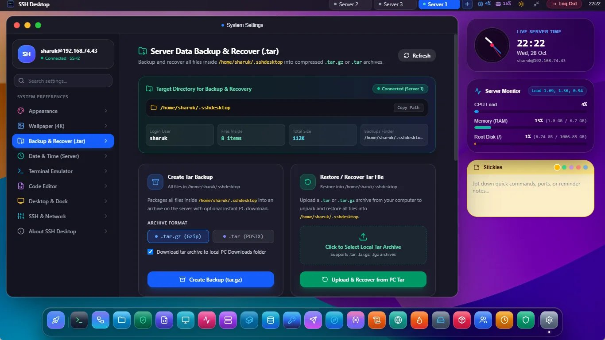

💾 Backup & Disaster Recovery
Automate server backups using Rsync and Tar. Create incremental snapshots of web directories, databases, and configuration files with one-click restore.

What is this Application & Why Do You Need It?
The Backup & Disaster Recovery suite provides visual backup scheduling and snapshot restoration for Linux. Protect critical website directories, configuration files, and database dumps using battle-tested Rsync and Tar engines with bandwidth throttling and checksum verification.
Relying on manual backup scripts often results in failed backups that go unnoticed until disaster strikes. Third-party backup agents consume excessive memory and store your data in external clouds. SSH Desktop gives you full control over where backups are stored with zero third-party dependency.
🖥️ Interface Overview & Visual Controls
Key Capabilities & Features
- Differential & Full Backups: Schedule full compressed archives or high-speed incremental Rsync mirrors.
- Integrated Database Dumps: One-click automated dumps of PostgreSQL and MySQL databases prior to file archiving.
- Retention Policies: Automatically prune old backups (e.g. keep last 7 daily, 4 weekly, and 12 monthly archives).
- 1-Click Restore: Restore corrupted directories or databases with rollback safeguards.
- Integrity Verification: Computes SHA-256 checksums to verify archive integrity.
📋 Prerequisites & Remote Host Requirements
- Standard Linux utilities: tar, rsync, gzip/xz.
- Database CLI utilities (mysqldump, pg_dump) if scheduling database backups.
- Sufficient storage on target destination (local disk, mounted NFS/Samba volume, or secondary server).
Step-by-Step How-To Tutorial
1. Creating a Backup Profile
Daily Web & DB Backup), select source directories (e.g. /var/www/html, /etc/nginx), and pick target destination.
2. Configuring Database Snapshots
pg_dump or mysqldump into the archive before compression.
3. Restoring from a Backup
💡 Pro-Tips & Best Practices
- Fast Zstandard Compression: Select Zstandard (zstd) compression for up to 5x faster backup creation and higher compression ratios compared to legacy gzip.
- Automated Database Dumps: Enable the "Include Database Dump" checkbox to automatically export clean PostgreSQL or MySQL SQL dumps into your backup archive before compressing files.
- Differential Rsync Snapshots: Use differential mode to only transfer changed file blocks, reducing backup execution time from hours to seconds on multi-gigabyte sites.
- Test Restores Periodically: Click "Verify Integrity" on any snapshot to test the archive checksum and verify that files can be restored cleanly in an emergency.
Under the Hood: Linux Commands & Architecture
Executes rsync -avz --delete or tar -czvf <dest> --exclude=... <src> over SSH, logging output and verifying archive headers via tar -tzf.
rsync -avz --delete, tar -czvf, mysqldump, pg_dump
⌨️ Keyboard Shortcuts & Productivity Tips
| Action / Function | Shortcut / Key Sequence |
|---|---|
| Trigger Immediate Backup | Cmd/Ctrl + B |
❓ Troubleshooting & Frequently Asked Questions
Backup failed: Disk space low on destination
Configure the "Retention Policy" in the backup job settings to automatically purge snapshots older than 14 or 30 days to maintain free disk capacity.
Database dump timeout on huge tables
Increase the "Dump Timeout" parameter in the database backup settings or exclude non-critical caching tables from the automated export.
Try SSH Desktop Free
Experience the macOS-inspired visual desktop for Linux servers. Hardware-accelerated terminal, dual-pane SFTP, Docker GUI, and background tunnels — 100% agentless.